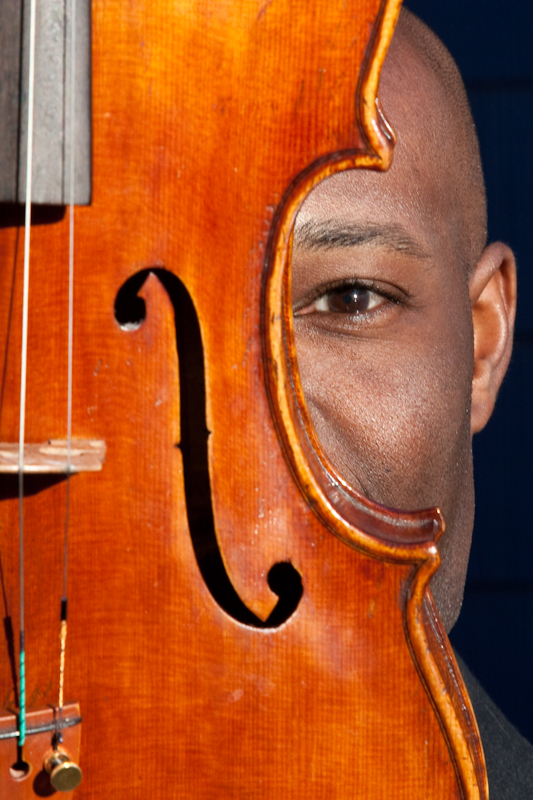
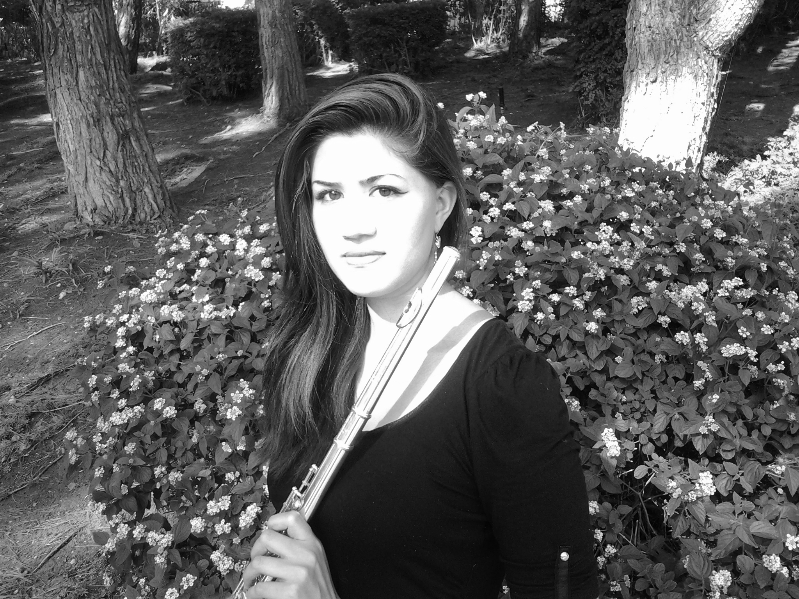
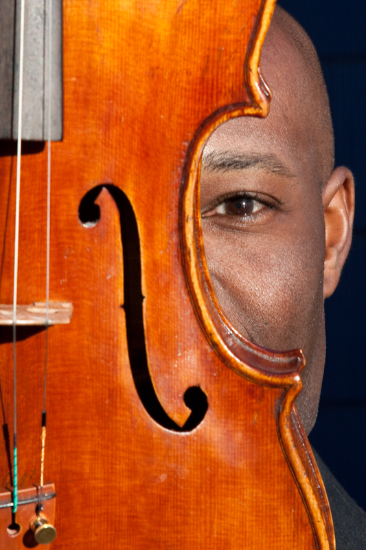
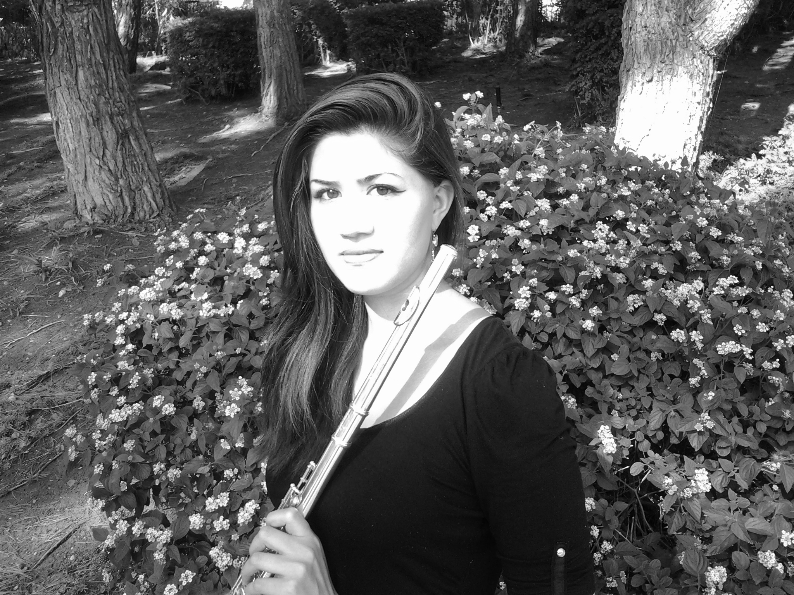

Welcome to Trio Notturno!
This is the official site for Trio Notturno. Welcome and take a look around. We hope you enjoy the beautiful music here!
About Us
Trio Notturno was formed in 2012 by Boston Conservatory students Kristen Kort (flute), Ken Allen (viola), and Molly McCaffrey (harp). Since their inception they have performed works by composers such as Claude Debussy, Harald Genzmer, and Théodore Dubois in both masterclasses and public concerts. Inspired by their name, which means “Night Trio,” the group has commissioned several local composers to write original Nocturnes in a desire to increase the repertoire for this beautiful combination of instruments.
Biographies
Kristen Kort received her Bachelor’s of Music in Flute Performance at San Diego State University, studying under Demarre McGill (Principal of the Dallas Symphony) and Pamela Martchev (Principal of the Boulder Philharmonic). While pursuing her undergraduate degree, she was an annual recipient of the Paul C. Stauffer Memorial Scholarship, and held the principal flute position of the SDSU Symphony Orchestra, Wind Symphony, and Opera Orchestra.
In addition to being a member of the National Flute Association, Kristen served as a Board Member of the San Diego Flute Guild (SDFG). Notably, she has won First Place in competitions such as the SDFG Orchestral Excerpt Competition and the Grossmont Instrumental Scholarship Audition.
Kristen has performed in master classes with renowned flutists such as Jim Walker, Amy Porter, and Sir James Galway. Currently she is pursuing a Master’s in Woodwind Performance at the Boston Conservatory, studying under Linda Toote, principal flutist of the Boston Lyric Opera.
Ken Allen is a founding member of Trio Notturno and The Haydn Project, a string quartet, and has performed with many ensembles in the Greater Boston area, including the Boston New Music Initiative, Boston Opera Collaborative, Chorus pro Musica, Fusion String Ensemble, Lexington Symphony, Lowell House Opera, Mercury Orchestra, Metropolitan Chorale of Brookline, MetroWest Opera, MIT Summer Philharmonic, New England Philharmonic, and Plymouth Philharmonic. He is also a classically trained pianist and has played the piano for folk dances throughout New England.
Ken earned his Master of Music degree in viola performance from the Boston Conservatory, where he studied with Lila Brown and Lenny Matczynski and performed in master classes for Helen Callus, Levon Chilingirian, John Harbison, the Jupiter String Quartet and Karl Paulnack.
Molly McCaffrey is a recent graduate from the Boston Conservatory, where she obtained her Master’s of Music in Harp Performance, under the direction of concert harpist, Ina Zdorovetchi. McCaffrey performs as a soloist, chamber and orchestral musician. She is a founding member of Trio Notturno, as well as the Apollonian Duo, comprised of violin and harp. She earned a Bachelor’s in Music Performance from Rhode Island College, where she studied with Joan Harrison Ceo under the Helen Foreman Scholarship for the Performing Arts.
A recipient of the Shinn Study Abroad Fund, McCaffrey spent a semester abroad in 2010, studying at the Royal College of Music in London, England. While in London she studied under the direction of Welsh Harpist Ieuan Jones. She has performed with numerous Boston Conservatory ensembles, including their Opera and Musical Theater productions, New Music ensembles and Orchestra.
Most recently, McCaffrey participated in the Brevard Music Institute Summer Festival in North Carolina.
Our Recordings
Here you may listen to our recordings.
Photos
Gallery of our trio photos.
 



Contact
Please fill out this form to contact us!